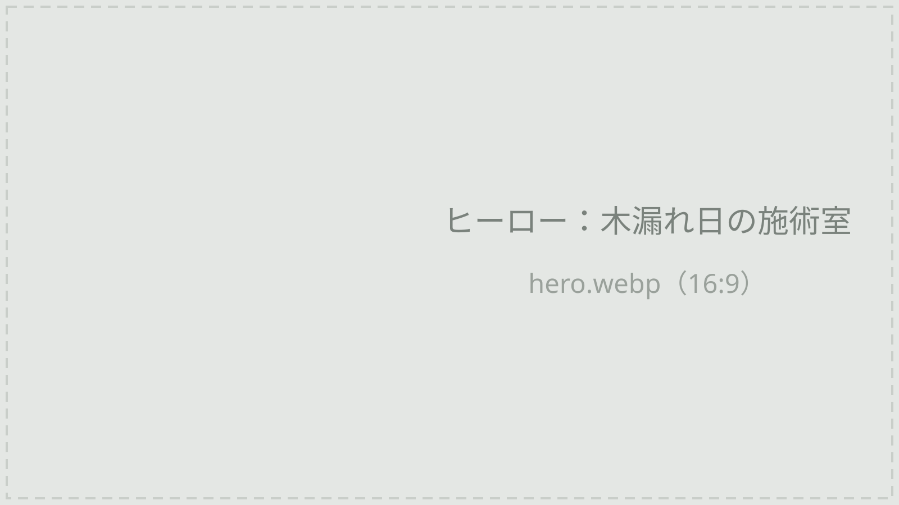
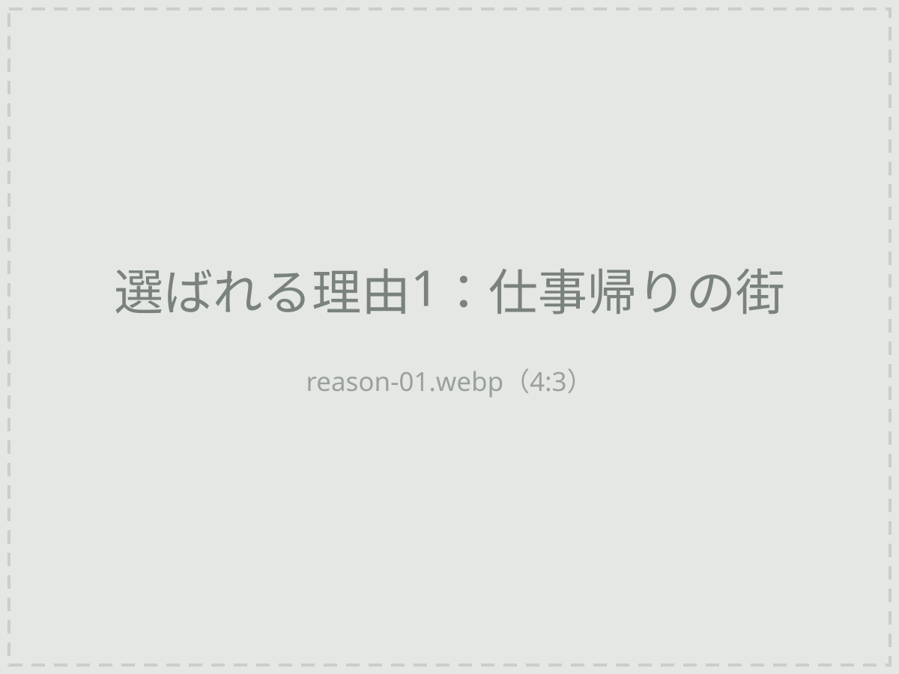
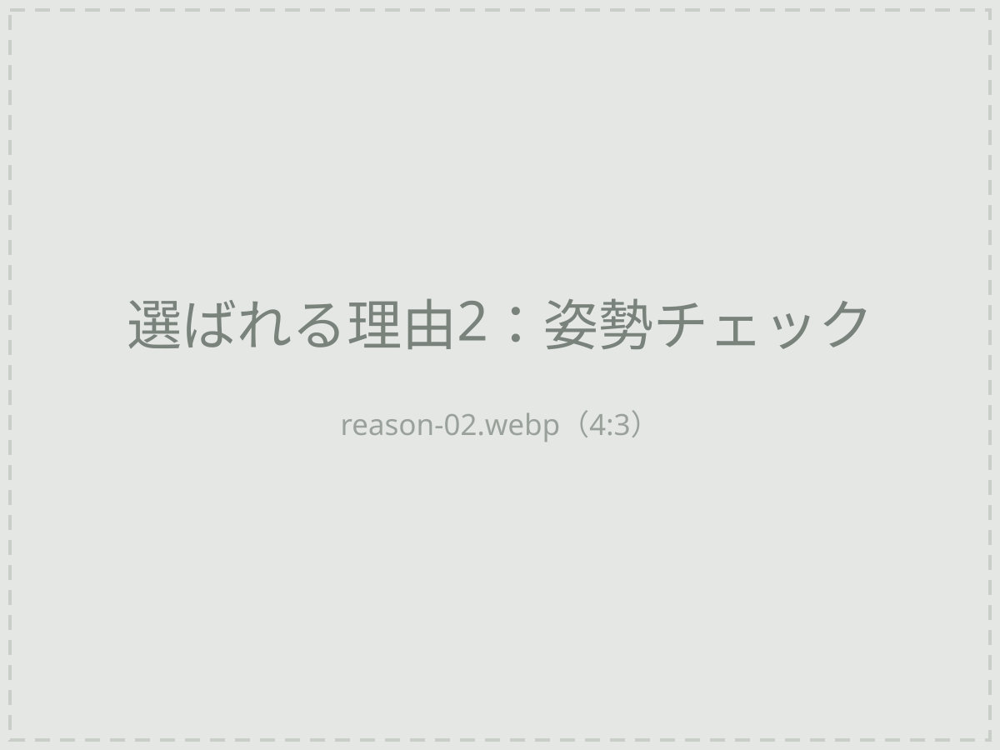
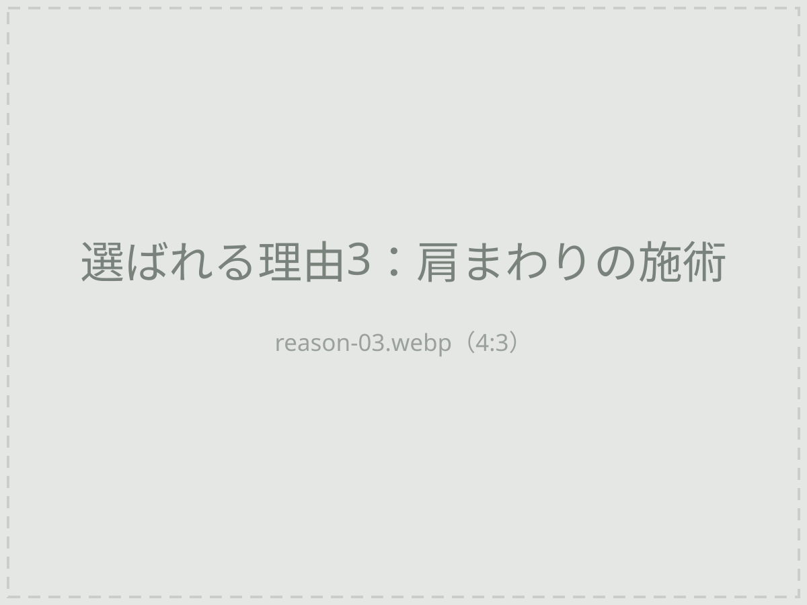
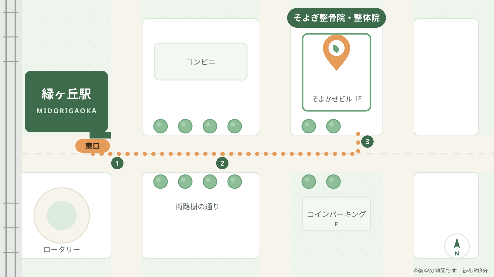

- 平日21時まで
- 日曜も営業
- 駅徒歩3分
仕事帰りに、 からだをリセット。
平日21時まで・駅徒歩3分。
デスクワークの肩こり・腰痛に、原因から向き合う整骨院です。
WORRIES
こんなお悩みありませんか？
- 長時間のPC作業で
肩がガチガチ - 画面を見続けて
首がつらい - 座りっぱなしで
腰が重い - 寝ても疲れが
抜けにくい - 忙しくて
平日昼は通えない - マッサージしても
すぐ戻ってしまう
そのお悩み、姿勢や体の使い方から
見直してみませんか？
REASON
そよぎ整骨院が選ばれる理由
-

平日21時まで・日曜も営業
平日は21時まで（最終受付20:30）、土曜・日曜も営業しています。駅から徒歩3分なので、お仕事帰りやお休みの日にも立ち寄りやすい整骨院です。
-

原因を探る、丁寧な検査と説明
つらい場所だけでなく、姿勢や座り方などの体の使い方まで確認します。いまの状態と施術の内容をわかりやすくご説明し、納得していただいてから施術を始めます。
-

国家資格を持つ施術者が担当
施術は、柔道整復師（ほねつぎの国家資格）を持つスタッフが担当します。お一人おひとりの状態に合わせて、無理のない施術を心がけています。
MENU
メニュー紹介
お悩みに合わせて選べる整体メニューをご用意しています。
Web予約限定 初回特典
自費メニューが初回3,980円
※初検料込み・税込。保険施術は対象外です。
VOICE
お客様の声
※掲載内容はすべて架空のサンプルです
-
仕事帰りに通えるのが助かります
残業のあとでも21時まで開いているので、無理なく通えています。肩まわりが軽く感じる日が増え、パソコン作業の合間に教わったストレッチも続けています。
-
説明がていねいで安心できました
初回に姿勢をチェックしてもらい、座り方のクセが腰の重さにつながっていると教えてもらいました。理由がわかったので、納得して施術を受けられました。
-
日曜に行けるのがありがたい
平日はなかなか時間がとれないので、日曜の午前に通っています。院内が明るく落ち着いた雰囲気で、リラックスして過ごせるのも気に入っています。
ACCESS
営業時間・アクセス
| 受付時間 | 月 | 火 | 水 | 木 | 金 | 土 | 日 |
|---|---|---|---|---|---|---|---|
| 10:00〜13:00 | ● | ● | ● | － | ● | ▲ | ▲ |
| 15:00〜21:00 | ● | ● | ● | － | ● | ▲ | － |
- ▲ 土曜 9:00〜17:00 ／ 日曜 9:00〜14:00（お昼休みなし）
- 平日の最終受付は20:30です。
- 定休日：木曜・祝日
- 住所
- 〒000-0000
緑ヶ丘市 若葉町2-8-15 そよかぜビル1F - 最寄駅
- 緑ヶ丘駅 東口 徒歩3分
- 駐車場
- なし（近隣にコインパーキングあり）
- お支払い
- 現金、クレジットカード、QRコード決済

RESERVATION
まずは一度、
からだの状態を
確かめにきませんか。
ご予約優先制です。空きがあれば当日のご案内もできます。
Web予約限定 初回特典
通常 5,000〜7,000円初回 3,980円
※自費メニュー・初検料込み・税込